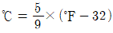
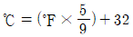
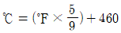
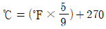
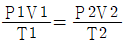
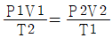
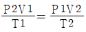
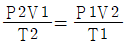

누설비파괴검사기사 (2017-05-07 기출문제)
1과목: 비파괴검사 개론
1. 자분탐상시험과 비교한 침투탐상시험의 특징으로 틀린 것은?
- 조작 단계가 독립적이며, 각각의 단계별 절차를 지키는 것이 중요하다.
- 표면으로 열린 결함이라도 결함 안에 이물질로 채워져 있으면 검출하기 어렵다.
- 일반적으로 자분탐상시험은 시간이 경과하여도 지시모양이 변하지 않으나 침투탐상시험은 변한다.
- 자분탐상시험에 비해 침투탐상시험은 온도의 영향을 적게 받으므로 온도변화에 의한 탐상이 유리하다.
(정답률: 알수없음)

2. 초음파누설검사의 장점이 아닌 것은?
- 특별한 추적가스가 필요치 않다.
- 잡음신호가 발생될 때에도 검사가 가능하다.
- 누설 시 음파가 발생하면 어떤 유체에도 사용이 가능하다.
- 대기 중으로 누설이 존재하여 음파를 발생할 때 측정이 가능하다.
(정답률: 알수없음)
3. 방사선투과시험에서 현상액의 온도가 규격에 화씨(℉)를 섭씨온도(℃)로 변환하는 식으로 옳은 것은?




(정답률: 90%)
4. 재료 내부의 동적거동을 비파괴적으로 평가하는 시험은?
- 방사선투과시험
- 자분탐상시험
- 와전류탐상시험
- 음향방출시험
(정답률: 64%)
5. 다음 중 시험체의 박막 두께 측정에 이용되는 비파괴검사법은?
- 침투탐상시험
- 방사선투과시험
- 음향방출시험
- 와전류탐상시험
(정답률: 70%)
6. 함금강에 첨가되는 합금원소의 효과를 설명한 것 중 틀린 것은?
- Ni는 내산성을 증가시킨다.
- Mo는 뜨임 메짐을 조장한다.
- Mn은 적열 메짐을 방지한다.
- W는 함유량이 많아지면 탄화물 생성을 용이하게 한다.
(정답률: 알수없음)
7. 철강 재료의 내마모성을 향상시키기 위한 방안으로 옳은 것은?
- 탄소의 함량을 낮게 한다.
- 내부 조직을 조대화 한다.
- 담금질 한 후 풀림처리 한다.
- 표면에 Cr, B 등을 침투시킨다.
(정답률: 64%)
8. 실루민에 Cu, Ni, Mg 등을 첨가하여 내열성이 우수하고 열팽창이 적어 피스톤 재료에 널리 쓰이는 Al 합금은?
- 라우탈
- 로우엑스
- 스텔라이트
- 하이드로날륨
(정답률: 64%)
9. 스테인리스강의 조직에 따른 분류가 아닌 것은?
- 페라이트형
- 시멘타이트형
- 마텐자이트형
- 석출경화형(PH계)
(정답률: 60%)
10. 마그네슘합금에 첨가되어 결정립 미세화 효과를 잘 나타내는 합금 원소는?
- Th
- Be
- Ca
- Zr
(정답률: 67%)
11. 인장시험에서 비례한도내의 응력(σ)-변형(ε)곡선으로부터 얻어지는 탄성률(young's modulus) E의 관계식으로 옳은 것은?
- ε/σ
- σ/ε
- εㆍσ
- ε2/σ
(정답률: 알수없음)
12. 황동의 가공재에서 발생하는 자연균열(season cracking)을 방지하기 위한 방법이 아닌 것은?
- 응력제거풀림을 실시한다.
- 암모니아 분위기에서 일정시간 유지시켜 준다.
- 도료를 도포하거나 혹은 아연도금을 행한다.
- (α+β)황동 및 β황동에는 Sn을 첨가하거나 1~1.5%의 Si을 첨가한다.
(정답률: 알수없음)
13. 회주철에 대한 일반적인 특성으로 틀린 것은?
- 상온에서 소성변형이 용이하다.
- 강에 비해 연신율이 작다.
- 주조성이 양호하다.
- 메짐성이 있다.
(정답률: 60%)
14. 금속 분말의 유동성에 영향을 미치는 인자가 아닌 것은?
- 분말의 조직
- 분말의 수분 함량
- 분말의 입도 및 형상
- 분말과 용기 사이의 마찰 계수
(정답률: 10%)
15. 열팽창 계수가 대단히 작아 바이메탈에 사용되는 인바(Invar)는 철(Fe)에 Ni이 어느 정도 함유되어 있는가?
- 17%
- 23%
- 36%
- 47%
(정답률: 65%)
16. 아크 용접기의 1차측 입력이 20kVA인 경우 가장 적합한 퓨즈의 용량은? (단, 이 용접기의 전원전압은 200V이다.)
- 100A
- 120A
- 150A
- 200A
(정답률: 91%)
17. 아크 쏠림의 방지 대책으로 틀린 것은?
- 접지점 2개를 연결한다.
- 접지점을 용접부에서 멀리한다.
- 아크 길이를 길게 하여 용접한다.
- 용접봉 끝을 아크 쏠림 반대 방향으로 기울인다.
(정답률: 알수없음)
18. 불활성 가스 텅스텐 아크 용접에서 주로 사용되는 보호 가스는?
- 수소
- 메탄
- 아르곤
- 아세틸렌
(정답률: 60%)
19. 용접 후 변형을 교정하기 위한 방법이 아닌 것은?
- 피닝법
- 역변형법
- 형재에 대한 직선 수축법
- 얇은 판에 대한 점 수축법
(정답률: 알수없음)
20. 일명 비석법이라고도 하며, 용접 길이를 짧게 나누어 간격을 두면서 용접하는 방법으로 다른 용착법에 대해 잔류응력을 적게 발생시키는 용착법은?
- 전진법
- 스킵법
- 덧살 올림법
- 캐스케이드법
(정답률: 80%)
2과목: 누설검사 원리
21. 압력변화측정법의 시험목적은?
- 누설부 검출 및 누설률 측정
- 누설률 측정 및 모니터링
- 누설부 검출 및 누설률 모니터링
- 누설부 검출
(정답률: 90%)
22. 할라이드 토치법에 대한 설명 중 틀린 것은?
- 할로겐가스를 함유한 기체로 충진된 시스템에서 누설위치를 찾는다.
- 불꽃의 색깔이 할로겐가스에 의해 변색되는 것으로 누설을 측정한다.
- 공기는 누설위치에서 프로브와 연결된 튜브를 통해서 유입된다.
- 할로겐 추적가스가 함유된 가체가 유입되면 불꽃은 적색으로 변한다.
(정답률: 73%)
23. 할로겐다이오드 스니퍼시험을 행하기 전에 발포누설시험을 행하는 이유를 설명한 것으로 올바른 것은?
- 할로겐다이오드 스니퍼시험에 대한 인정된 기술자를 배제하기 위하여
- 할로겐다이오드 스피너시험전에 시험할 용기를 구조적으로 과부하시키기 위하여
- 할로겐다이오드 스니퍼시험시보다 빨리 시험위치를 설정하기 위하여
- 할로겐다이오드 스니퍼시험 시 배경잡음의 원인이 되는 거대 누설을 제거하기 위하여
(정답률: 90%)
24. 누설이 발견되어 용기내의 할로겐 혼합물을 배기시키고 보수하고자 한다. 배기시키는 위치에 관한 설명 중 옳은 것은?
- 배기위치는 혼합물 제적비에 의존한다.
- 배기위치는 어느 곳이나 상관없다.
- 시험체로 배기가스가 재 투입되지 않도록 멀리하고 배기구는 아래로 향하게 한다.
- 시험체의 압력을 낮추지 않고도 보수가 가능하므로 배기는 별로 중요한 문제가 아니다.
(정답률: 알수없음)
25. 화씨온도 60℉를 절대 온도로 나타내면?
- 273K
- 3330R
- 333K
- 5200R
(정답률: 70%)
26. 가스의 실제 압력이며 완전 진공인 때를 0으로, 표준대기압을 1.033kgf/cm2로 나타내는 압력을 무엇이라 하는가?
- 절대압
- 진공압
- 게이지압
- 분위기압
(정답률: 알수없음)
27. 기포누설시험에서 감도를 증가시키는 방법 중 틀린 것은?
- 기포형성시간, 관찰시간을 증진시킨다.
- 적용할 시험용액의 표면장력을 증가시킨다.
- 누설을 통과하는 기체의 양을 증가시킨다.
- 기포방출을 관찰하기 위한 조건을 개선한다.
(정답률: 알수없음)
28. 기포누설 시험 시 아주 미세한 누설이 검출되지 않았다. 그 이유로서 타당한 것은?
- 검사자가 너무 짧은 시간동안 시험부위를 관찰했기 때문에
- 기압이 너무 낮기 때문에
- 진공상자가 너무 작기 때문에
- 고무 가스켓이 마모되었기 때문에
(정답률: 80%)
29. 다음 중 누설률 측정단위가 아닌 것은?
- Lb/in3
- atmㆍcm3/s
- stdㆍcm3/s
- Paㆍm3/s
(정답률: 알수없음)
30. 다음 중 할로겐 누설시험에서 할로겐 원소를 일반 냉매와 혼합하여 사용하는 이유는?
- 할로겐 원소의 독성을 없애기 위해
- 가스압을 증가시키기 위해
- 가스 농도를 증가하기 위해
- 고무재료 등에 적용하기 위해
(정답률: 알수없음)
31. 압력변화시험에서 시험품의 크기나 체적이 증가될 경우, 누설감도에 미치는 영향을 올바르게 기술한 것은?
- 시험 중 압력 변화는 시험품의 크기나 체적이 증가함에 따라 더 커지므로 누설감도는 증가한다.
- 시험 중 압력 변화는 시험품의 크기나 체적이 증가함에 따라 더 적어지므로 누설감도는 증가한다.
- 시험 중 압력 변화는 시험품의 크기나 체적이 증가함에 따라 더 커지므로 누설감도는 증가한다.
- 시험 중 압력 변화는 시험품의 크기나 체적이 증가함에 따라 더 적어지므로 누설감도는 감소한다.
(정답률: 80%)
32. 기포누설시험에 적절한 시험체표면 온도 범위는?
- 40~90℉
- 60~100℉
- 40~125℉
- 80~160℉
(정답률: 91%)
33. 제한된 지역에서 할로겐 스니퍼시험을 하는 작업자는 흡연을 삼가야 한다. 그 이유로서 타당한 것은?
- 교정주기가 짧아진다.
- 독성이 높은 가스로 변화한다.
- 환기로 인해 적절한 습도유지가 어렵다.
- 누설 측정미터기에 반복적이고 불규칙한 신호가 나타난다.
(정답률: 82%)
34. 표준 대기압 1atm을 틀리게 표현한 것은?
- 760torr
- 760mmHg
- 101.3kPa
- 1013bar
(정답률: 64%)
35. 기포누설시험(bubble test)을 할 때 검출능에 악영향을 주는 인자로 옳지 않은 것은?
- 시험 표면의 부적절한 온도
- 시험 표면에의 불순물
- 오염된 시험 용액
- 세척ㆍ건조된 시험 표면
(정답률: 100%)
36. 다음 중 모세관 현상을 이용한 누설검사법은?
- 액체침투탐상법
- 진공상자법
- 가압법
- 기체방사성 동위원소법
(정답률: 100%)
37. 기체 방사성동위원소 추적가스 사용 시 주의해야 할 사항이 아닌 것은?
- 샘플링 검사든지 전수검사든지 한 번에 침지하도록 하고 가압 후 30분 안에 계측한다.
- 침지 후 베타선이 제거될 때까지 액체로 세척한다.
- 유리, 금속, 세라믹 등 복합물질로 표면이 코팅되어 있다면 시험 전에 Kr-85에 대한 표면 흡수율을 검사한다.
- 방사성 추적가스 시험법은 액체침지 전에 이루어져야 한다.
(정답률: 80%)
38. 진공펌프 시스템에서 냉각장치를 낮은 온도로 유지하기 위하여 사용하는 방법 또는 재료로써 가장 적합하지 않은 것은?
- 액체질소
- 기계식냉동기
- 드라이아이스
- 냉각수
(정답률: 77%)
39. 기포누설 시험 중 진공상자법의 수행 직전에 교정여부를 점검하여야 할 것은?
- 누설탐지액
- 조명장치
- 진공장치
- 압력게이지(진공게이지)
(정답률: 알수없음)
40. 다음 중 보일-샤를의 법칙을 나타내는 식은? (단, P:압력, V:부피, T:절대온도이다.)




(정답률: 67%)
3과목: 누설검사 시험
41. 기포누설검사-진공상자법에서 나타나는 허위지시의 발생형태에 대하여 맞게 설명한 것은?
- 연속적으로 기포가 발생한다.
- 10초마다 한번씩 큰 기포가 발생한다.
- 하나의 작은 기포가 발생한 후 몇 초 후에 사라진다.
- 규칙적으로 작은 기포가 발생한다.
(정답률: 75%)
42. 누설시험에서 감도(sensitivity)의 설명으로 틀린 것은?
- 추적기체의 누출에 대한 검출기의 응답
- 쉽고 간단하게 검출 가능한 검출기의 성능
- 사용된 누설시험 장치에 따라 명확히 검출할 수 있는 최소 누설률의 크기
- 사용된 누설시험 방법에 따라 명확히 검출할 수 있는 최소 누설률의 크기
(정답률: 59%)
43. 음향 누설검사에서 누설의 위치 측정에 크게 영향을 미치는 주요 변수가 아닌 것은?
- 유체의 온도
- 유체의 점도
- 유체의 속도
- 압력의 차이
(정답률: 알수없음)
44. 암모니아 추적자의 검출방법으로 틀린 것은?
- 리트머스시험지와 반응하여 홍색에서 청색으로 변화한다.
- 염화수소와 반응하여 염화암모니아의 흰연기를 발생한다.
- 아황산가스와 반응하여 황화함모늄의 흰연기를 발생한다.
- 네슬러 시약과 반응하여 적갈색에서 황색으로 변화한다.
(정답률: 67%)
45. 암모니아누설검사에서 누설이 존재하면 염료분말은 무슨 색으로 변화하는가?
- 자주색
- 노란색
- 청색
- 녹색
(정답률: 알수없음)
46. 압력용기 등의 고압용기 누설검사에는 초음파누설검사가 사용된다. 이에 대한 설명 중 틀린 것은?
- 누설 위치를 알아낼 수 있다.
- 기체보다 액체 누설탐지가 용이하다.
- 지중 배관의 누설은 감지하기 곤란하다.
- 10-3atmㆍcm3/s 이하 누설에서는 사용할 수 없다.
(정답률: 46%)
47. 표준상태에서 기체의 확산속도에 영향을 미치는 인자는?
- 기체의 몰수
- 기체 상수
- 기체 연소성
- 기체의 분자량
(정답률: 알수없음)
48. 이상기체 상태에 대한 설명 중 잘못된 것은?
- 샤를의 법칙을 따른다.
- 기체 분자간 인력이 무시된다.
- 기체 분자간 부피가 무시된다.
- 기체 분자간 충돌을 비탄성충돌이다.
(정답률: 알수없음)
49. 기포누설 시험에 사용되는 발포액의 조건으로 잘못된 것은?
- 표면장력이 커야 한다.
- 점도가 낮아야 한다.
- 적심성이 좋아야 한다.
- 발포액 자체에 거품이 없어야 한다.
(정답률: 73%)
50. 기포누설시험에서 연속적인 기포가 발생되었을 경우 실제 존재하는 결함의 형태는 어떤 경우인가?
- 용접비드 루트부의 황균열
- 표면결함
- 융합불량
- 저장탱크 옆판 용접부의 관통균열
(정답률: 알수없음)
51. 대형시스템의 압력변화측정시험 동안 내부가스 이슬점온도 측정은 무엇을 결정하기 위한 것인가?
- 온도로 인한 수증기 효과
- 수증기의 양
- 콘크리트의 수분량
- 전기단락을 방지하기 위한 계내의 습기 준위
(정답률: 75%)
52. 기포누설 시험의 감도에 영향을 주는 인자가 아닌 것은?
- 누설 경계에서의 압력 차
- 누설을 통과하는 가스의 종류
- 기포를 형성하는 발포액의 종류
- 진공상자의 크기
(정답률: 87%)
53. 헬륨질량분석기에서 이온화된 기체들을 질량에 따라 분리하는 곳은?
- 필라멘트
- 증폭기
- 자장영역
- 가속슬리트
(정답률: 50%)
54. 가열 양극 할로겐 검출기의 신호방식이 아닌 것은?
- 마이크로 암미터
- 갈바노미터
- 글로방전 튜브
- 불꽃색
(정답률: 43%)
55. 방사성동위원소 추적가스 누설검사에서는 방사성가스의 흡입을 방지하기 위해 액체에 방사성동위원소를 용해시켜 사용한다. 그 중 가장 만족스러운 방사성동위원소의 하나로 물에 용융된 상태로 사용하는 것은?
- Rn-222
- JK-85
- Na-24
- He-4
(정답률: 알수없음)
56. 가열 양극 할로겐법의 장점에 대한 설명으로 틀린 것은?
- 특별한 누설시험 시스템 없이 누설량을 측정할 수 있다.
- 대기압 하에서 작업할 수 있다.
- 할로겐 추적가스에만 응답할 수 있다.
- 기름에 막혀 있는(Oil-Clogged) 누설을 검출할 수 있다.
(정답률: 64%)
57. 헬륨질량 분광계 시험-검출기 프로드법의 응답시간에 대한 설명 중 틀린 것은?
- 장치의 출력에 지시가 최초로 나타나는 시간이다.
- 응답시간은 시스템 교정 중에 관찰되어야 한다.
- 누설의 위치를 정확히 찾는데 중요하다.
- 응답시간은 가능한 짧을수록 좋다.
(정답률: 알수없음)
58. 헬륨질량분석기를 이용한 누설검사에서 알 수 없는 것은?
- 누설되는 관통홀의 크기
- 누설의 존재
- 누설 위치
- 누설량
(정답률: 알수없음)
59. 할로겐누설시험에서 고무재료나 플라스틱 튜브재료 등을 피해야 되는 주된 요인은?
- 인화성 재질이라 화재의 위험이 있다.
- 할로겐 가스에 접촉하면 열화 된다.
- 추적가스를 쉽게 흡수해서 허위지시의 원인이 된다.
- 가스의 확산속도가 느리게 되는 원인이 된다.
(정답률: 73%)
60. 할로겐 다이오드 프로브 시험에서 검출기의 이동방향으로 맞는 것은?
- 가장 최상부에 아래쪽으로 향함
- 시험 물체의 아래쪽에서 위쪽으로 향함
- 탐색할 방향은 중요하지 않고, 누설들과 인접한 곳을 향함
- 주변의 공기 속으로 확산된 후에는 어느 방향으로 하여도 된다.
(정답률: 알수없음)
4과목: 누설검사 규격
61. 보일러 및 압력용기에 대한 누설시험(ASME Sec.V Art.10)에서 대형 저장탱크의 밑판 누설검사를 수행할 때 다음 중 가장 적합한 누설검사법은?
- 할로겐 누설시험법
- 헬륨 질량분석법-추적자 프로브법
- 헬륨 질량분석법-검출기 프로브법
- 진공상자법
(정답률: 알수없음)
62. 보일러 및 압력용기에 대한 누설시험(ASME Sec.V Art.10 App.IV)에 따른 검출기 프로브형 헬륨질량 분석기 시험을 할 때 사용할 수 있는 장치의 최저 감도는?
- 1×10-4Paㆍm3/sec
- 1×10-7Paㆍm3/sec
- 1×10-10Paㆍm3/sec
- 1×10-13Paㆍm3/sec
(정답률: 알수없음)
63. 보일러 및 압력용기에 대한 누설시험(ASME Sec.V Art.10)에서 시험방법과 압력 적용방법이 옳지 않은 것은?
- 헬륨진량분석기법(후드법)-시험체 내부 진공
- 헬륨진량분석기법(추적자법)-시험체 내부 가압
- 기포누설시험(가압발포액법)-시험체 내부 가압
- 기포누설시험(진공상자법)-시험체 외부 부분진공
(정답률: 50%)
64. 다관 원통형 열교환기(KS B 6230)에 의한 AES형 열교환기의 수압시험에서 관 쪽의 압력이 동체 쪽 보다 높은 경우, 일반적인 수압시험의 순서로 옳은 것은?
- 동체쪽 시험→관쪽 시험→동체 덮개시험
- 관속 시험→동체쪽 시험→관쪽 시험
- 관속 시험→관쪽 시험→동체쪽 시험
- 동체 덮개시험→관쪽 시험→동체쪽 시험
(정답률: 알수없음)
65. 보일러 및 압력용기에 대한 누설시험(ASME Sec.V Art.10)에 따른 시험보고서 작성 시 게이지에 포함되지 않는 것은?
- 제작자
- 모델
- 범위
- 사용 전압
(정답률: 80%)
66. 보일러 및 압력용기에 대한 누설시험(ASME Sec.V Art.10 App.Ⅱ)에 따라 기포누설 시험에 적용하는 발포액의 설명 중 틀린 것은?
- 시험조건의 온도에 적합해야 한다.
- 가정용 세제를 사용한다.
- 발포액 자체의 기포는 최소화 한다.
- 발생된 기포는 공기의 건조로 소멸되지 않아야 한다.
(정답률: 알수없음)
67. 보일러 및 압력용기에 대한 누설시험(ASME Sec.V Art.10)에 따라 누설시험 보고서에 기록해야 할 사항들로 묶인 것들 중에서 잘못된 것은?
- 시험 일자, 시험한 사람의 자격과 이름
- 시험 결과, 시험 장치
- 온도 측정 장비, 시험방법
- 시험원의 자격유효일, 실무이력
(정답률: 알수없음)
68. 강재 석유저장탱크 구조(KS B 6225)에서 결과를 기록할 때 물채우기시험의 옆판 하단침하, 변형을 기록하는 회수는?
- 물채우기시험 전 : 1회
- 물채우기시험 전, 최고 수위시 : 2회
- 물채우기시험 전, 최고 수위시, 물 빼기 후 : 3회
- 물채우기시험 전, 최고 수위시, 물 빼기 전, 후 : 2회
(정답률: 알수없음)
69. 누설 검사시에 사용되는 압력 게이지 중 다이얼 게이지(sial gauge)의 눈금 범위는 시험 압력이 10kg/cm2으로 규정되어 있을 때, 다음 중 어떠한 것을 선택하는 것이 가장 적절하겠는가? (단, 미국기계협회(ASME) 규격을 사용한다.)
- 1~10kg/cm2
- 0~12.5kg/cm2
- 0~20kg/cm2
- 0~50kg/cm2
(정답률: 알수없음)
70. 보일러 및 압력용기에 대한 누설시험(ASME Sec.V Art.10)에서 적용하고 있는 누설률의 국제표준(SI)단위로 옳은 것은?
- Paㆍin3/sec
- stdㆍcm3/sec
- Paㆍm3/sec
- atmㆍcm3/sec
(정답률: 92%)
71. 다관 원통형 열교환기(KS B 6230) 중 열교환기 종류에 속하지 않는 것은?
- AES형
- AKS형
- BFU형
- BEM형
(정답률: 72%)
72. 보일러 및 압력용기에 대한 누설시험(ASME Sec.V Art.10)에서 요구하는 시험조건 중 시험체의 온도로 옳은 것은?
- 100℉
- 150℉
- 175℉
- 200℉
(정답률: 알수없음)
73. 다관 원통형 열교환기(KS B 6230)에 따라 보강판 용접부에 발포제를 사용한 누설조사에서 사용 압력은?
- 0.1MPa 이하의 공기압
- 0.15MPa 이하의 공기압
- 0.2MPa 이하의 공기압
- 0.3MPa 이하의 공기압
(정답률: 60%)
74. 보일러 및 압력용기에 대한 누설시험(ASME Sec.V Art.10)에 따라 기포누설 시험에 대한 설명으로 틀린 것은?
- 가압법-시험 전, 압력 유지시간을 적용한다.
- 진공상자법-발포액 적용 전 감압한다.
- 진공상자법-발포액 적용 후 감압한다.
- 가압법-시험압력은 설계압력의 25% 이하로 적용한다.
(정답률: 알수없음)
75. 강재 석유저장 탱크의 구조(KS B 6225)에 따라 저장 탱크의 개구부 보강재 용접부를 공기압으로 누설시험을 수행할 때의 규정 압력은?
- 100kPa 게이지압 이하
- 200kPa 게이지압 이하
- 300kPa 게이지압 이하
- 500kPa 게이지압 이하
(정답률: 73%)
76. 강제 석유저장탱크의 구조(KS B 6225)에 의거 부상 지붕배수설비의 조립 후 몸통 물채우기 시험의 절대압력은? (단, 대기압은 100kPa이다.)
- 100kPa
- 200kPa
- 300kPa
- 400kPa
(정답률: 알수없음)
77. 다관 원통형 열교환기(KS B 6230)의 BEM형 열교환기에서 칸막이실 및 칸막이실 뚜껑을 부착하고 관 쪽에 압력을 가하여 칸막이실 및 관계 각 부의 내압 및 누설을 조사하는 시험을 무엇이라 하는가?
- 관속 시험
- 관 쪽 시험
- 동체 쪽 시험
- 동체 뚜껑 시험
(정답률: 60%)
78. 강제 석유저장 탱크의 구조(KS B 6225)에 따라 저장 탱크의 지붕판 용접부에 대하여 누설시험을 할 경우, 이에 대한 설명 중 틀린 것은?
- 공기압을 걸 때 그 압력이 설계압력이상이어야 한다.
- 진공시험에 의한 누설시험을 실시한다.
- 부상 지붕의 폰툰 용접부에는 공기압에 의한 누설시험을 실시한다.
- 덱의 용접부에는 진공에 의한 누설시험을 실시한다.
(정답률: 60%)
79. 보일러 및 압력용기에 대한 누설시험(ASME Sec.V Art.10 App.Ⅳ)에 따라 헬륨질량분석 시험 중 검출 프로브법에서 시험 전 시험압력은 최소 얼마동안 유지시켜야 하는가?
- 10분
- 30분
- 1시간
- 2시간
(정답률: 알수없음)
80. 보일러 및 압력용기에 대한 누설시험(ASME Sec.V Art.10)에 따른 시험 전 준비사항을 설명한 것으로 틀린 것은?
- 시험체의 모든 개구부는 누설시험 전에 밀봉한다.
- 시험체 표면의 오염물질은 시험 전 제거한다.
- 시험체의 표면을 수세척 할 경우 건조 후에 시험한다.
- 수세는 누설시험 후에 실시하고 표면을 건조한다.
(정답률: 알수없음)